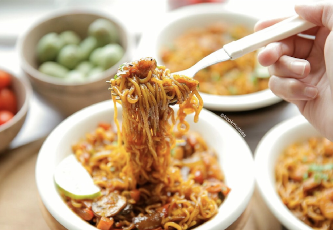

15 november 2020
Quick fix uit een pot? Probeer dan deze pittige noedels met garnalen! Recepten uit één pot zijn echt een timesaver en zo smaakvol! Het is snel, makkelijk, eenvoudig en ideaal.
Ingredients
- - 30 ml zonnebloemolie
- - 1 gele ui
- - 1 paprika
- - 1 wortel
- - 250 g garnalen
- - 3 g paprikapoeder
- - 5 g currypoeder
- - 3 g zwarte poeder
- - 1 runderboullionblokje
- - 100 g ketjap manis
- - 30 g sojasaus
- - 50 g chilisaus
- - 15 g sambal
- - 350 ml water
- - 186 g noedels
Stap 1

Snijd de ui in halve ringen, champignons in plakjes, wortel in kleine blokjes en paprika in halve reepjes.
Stap 2

Verhit de zonnebloemolie in een wokpan op middelhoog vuur. Voeg de ui, champignons, wortel en paprika toe. Bak de groentes 4-5 minuten of tot ze zacht zijn. Voeg de garnalen, paprikapoeder, knoflookpoeder, currypoeder, zwarte peper toe en verkruimel het runderbouillonblokje boven de pan. Roerbak voor een minuut.
Stap 3

Voeg de ketjap manis, sojasaus, chilisaus, sambal en het water toe. Kook mee tot het goed pruttelt. Voeg de noedels toe. Kook de noedels tot ze de saus hebben geabsorbeerd en zacht zijn. Proef om te kijken of er genoeg zout in zit en anders kun je zout toevoegen naar smaak.
Stap 4

Stap 5

Stap 6
TIPS:
Voeg zout en peper toe naar smaak.
Voeg groentes toe die jij lekker vindt.
Voeg sambal toe naar smaak.